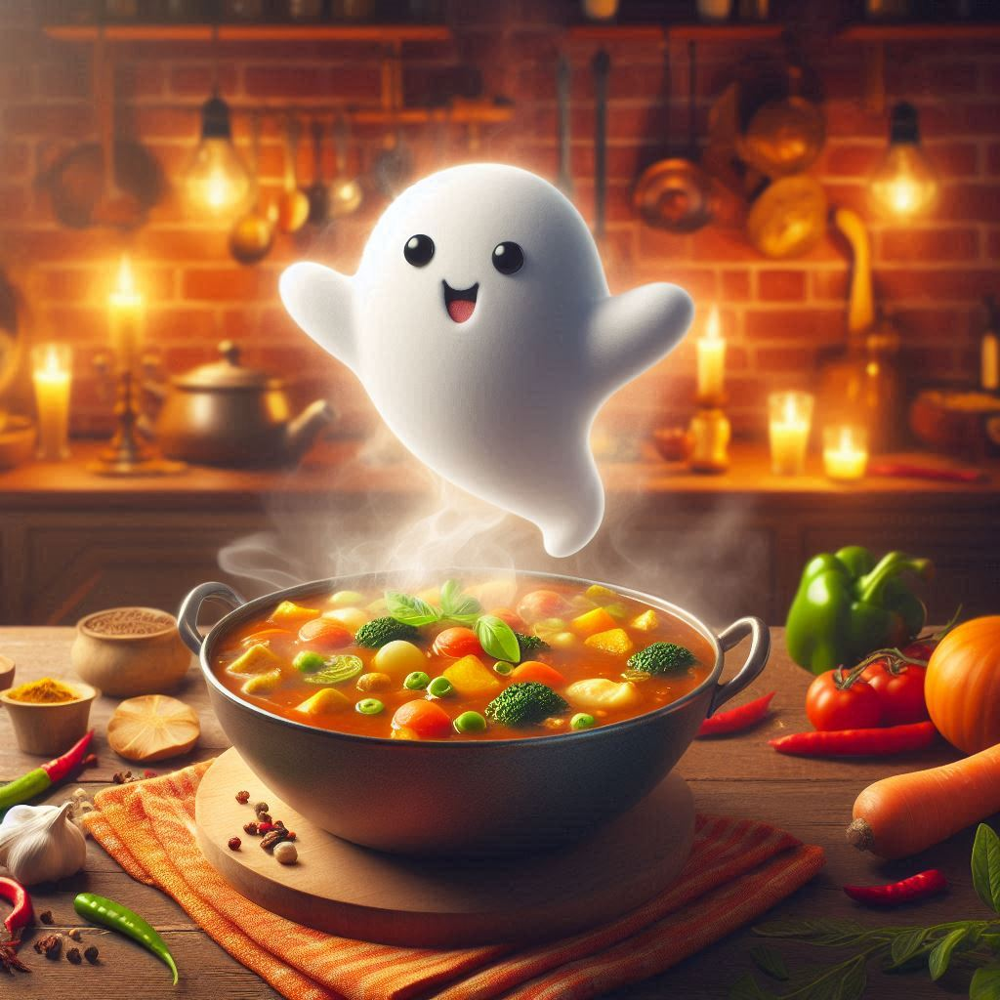

GHOST CURRY

Description
Concocted deep within haunted kitchens and bubbling cauldrons, Ghost Curry is a dish reserved for the monstrous elite. It's a spectral blend of soul-searing spice, eerie herbs, and ingredients summoned from the other side. This curry burns with ghostly heat and leaves behind a lingering whisper of its victims. Best served at midnight, under a blood moon.
Ingredients
- 👻 3 Ghost Peppers (Bhut Jolokia) – harvested at the witching hour for max potency
- 🧅 1 large onion – charred over cursed coals
- 🧄 6 cloves garlic – crushed under a vampire's fang
- 🌶️ 2 tbsp monster masala – (blend of black cardamom, cinnamon bark, and ground dragon scale)
- 🧟♂️ 1 lb shredded zombie meat – ethically sourced from undead farms (or use jackfruit for vegetarian monsters)
- 🍅 2 cups blood tomatoes – overripe and juiced
- 🌿 Fresh grave-grown coriander – chopped
- 💀 1 cup bone broth – aged in crypt barrels
- 🧂 Salt from ancient sea tears – to taste
- 🔥 1 tsp ash of burnt contract – for smokiness
- 🧬 Optional: Phantom essence – one drop for invisibility on consumption
GO HOME